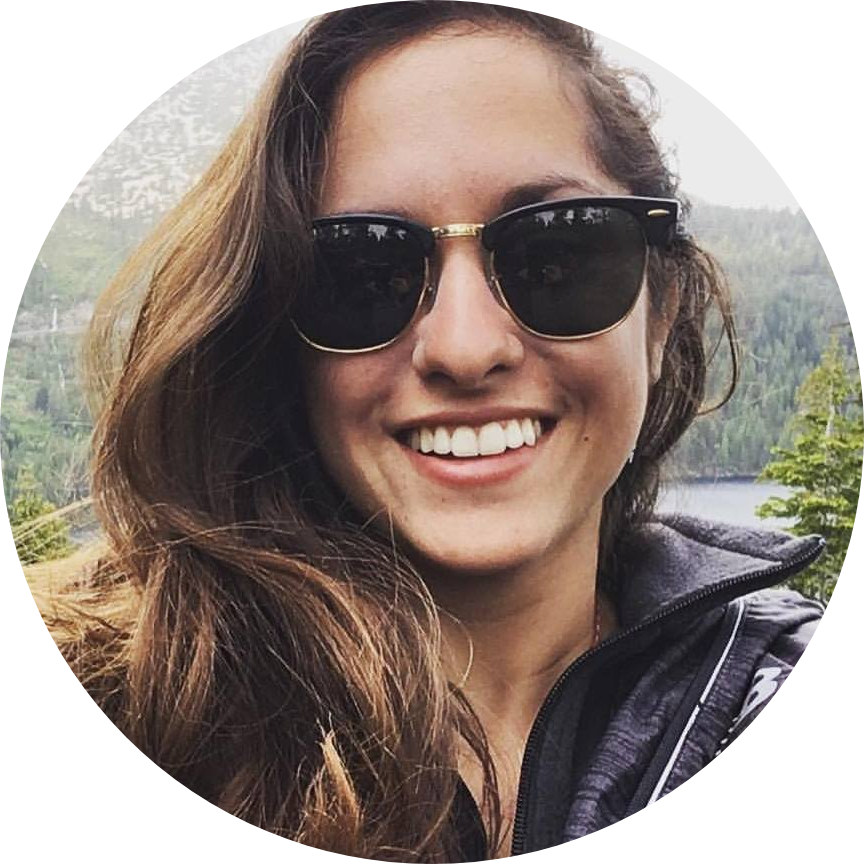

Gamer to Developer
Posted by Kristina Macias August 14, 2021
"Everything begins with an idea." - Earl Nightingale
The thought of becoming a Software Engineer began during the start of the 2019 Global Pandemic. As the world was forced to socially distance and everyone was encouraged to limit interaction to the people that they lived with, I found myself having a lot of extra free time. Some of this free time was spent playing video games and some of it was spent engrossed in my new board game hobby. I spent most of my weekends learning how to play new board games - I should note that I wasn't learning a simple games like Monopoly. I was learning games with deep-rooted strategy, most of which had 30 to 100 page rule books. With this hobby, I had discovered that I gueninely loved and craved learning. I then did what any new hobbyist does - I created an entire Instagram account dedicated to it. I found an entire community people that, like me, loved to learn. As my Instagram following grew, a spark iginited in me and I decided that I needed a website.
“Never give up on a dream just because of the time it will take to accomplish it. The time will pass anyway.” — Earl Nightingale
I spent a long time hovering over that idea and purchase the website domain. I thought about finding a trendy theme and deploying my website using Wordpress, but I knew deep down that I wanted to build my website from scratch. I purchased a Udemy course teaching Front End Web Development and I fell in love. I started to explore different career paths in Front End Web Development. I'll be honest, I was completely overwhelmed. It seemed like there was too much to learn - languages, frameworks, libraries, etc. I felt what some people describe as selection overload. I tried to create a curriculum for myself, but I found myself getting bogged down by the sheer amount of learning resources on the web. I could not differentiate what was critical for me to learn and when I needed to know it. I was worried that I was too old to start over and learn something new. After wasting a few more months contemplating and procrastinating, I had realized that time had passed without me stepping into this new idea. It no longer mattered to me how long it would take me to learn and that's when my journey in web development began.